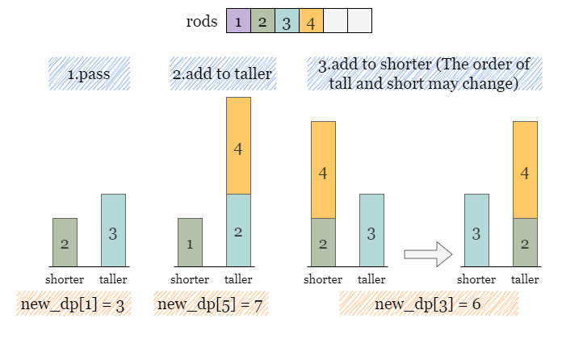

One possible approach to this problem is to generate all possible combinations of the rods and check which ones satisfy the conditions.
However, the number of possible combinations can grow exponentially with nn, the number of rods given as input, because each rod can be either added to the 1st stand, 2nd stand or not be used at all.
This leads to a time complexity of O(3n)O(3^n), so this approach would not be feasible for values of about n>14n > 14, which implies that we shall look for a better way to filter out eligible cases than the brute-force approach.
One possible approach to solve this problem is using a meet-in-the-middle technique, which involves breaking the problem into halves and solving them separately. 2⋅O(3n2)2 \cdot O(3 ^ \frac{n}{2}) is much faster than O(3n)O(3^n).
Brute force methods applied over the entire rods may not be effective when n>14n > 14. However, according to the constraints, dividing
rods into two halves will bring nn to an acceptable level.
In this case, we can split the rods into two halves and then generate all combinations of the height of
the two stands (left, right) for each half separately.
The steps of building the hash set states that stores all distinct combinations from the left half of
rods are described as follows:
Begin with states = {(0, 0)}, where (0, 0) represents the only combination that
does not use a rod.
For the first rod r1, there are 3 operations (not using r1, adding r1
to the left stand, and adding r1 to the right stand) to update each state in state,
which results in state = {(0, 0), (r1, 0), (0, r1)}
For the second rod r2, there are 3 operations to update each state in state, which
results state = {(0, 0), (r1, 0), (0, r1), (r2, 0), (0, r2), (r2 + r1, 0), (r1, r2), (r2, r1), (0, r2
+ r1)}.
This process continues until all rods have been considered. As you can see, the exponential nature causes the number of states to blow up very quickly, which is why it is important to split the input in half to minimize the exponent.
How should we store the states so that we can combine the halves in the end to find the answer? Let's say that we
form a combination using rods in the first half where the left rod has a height of 5 and the right rod
has a height of 2. The left rod is taller by 3, we say diff = left - right =
3. The problem states that the rods must be equal in height, so when we combine with the second half, we
need to find a combination where the right rod is taller by 3 to compensate. We would need to look for -diff =
-3 where diff is defined as left - right.
Therefore, let's store the combinations of the first half in a hashmap first_half, where the keys are
diff = left - right. What should the values be? The value should be either the left or right rod height
(it doesn't matter, as long as we choose the same side for both halves). This is because the answer for a
combination between the two halves would be either the two left rods or the two right rods summed.
We will store first_half[left - right] = left.
Similarly, we collect all combinations of the right half of rods and store them in another hash map
second_half, in the same format of second_half[left - right] = left.
After building the hashmaps, we can traverse over first_half and for each combination represented as
first_half[diff] = left, we check whether second_half contains a combination with the
opposite height difference -diff. If it does, we take first_half[diff] +
second_half[-diff] as a valid billboard height.
We can keep track of the tallest stands of the same height seen so far.
Divide rods into two halves.
Define a helper function to collect every distinct combination (left, right) for a given half.
We start with a set states that holds the first state (no rods) (0, 0). Then we
iterate over each rod in the given half. For each rod, we consider each state. For each state, we either add
the rod to the left, to the right or skip it. We can use an intermediate set new_states. For
each rod, we initialize new_states to an empty set. Then we iterate over states
and add to new_states. We then perform a union between states and
new_states before moving on to the next rod.
Once we have all combinations, create a hash map and iterate over the combinations. For each (left,
right) pair, put it in the hash map with a key of left - right and a value of
left. Note that for each unique key left - right, we only want the
maximum value. Return the hash map from the helper function.
Perform step 2 and 3 on both halves of rods. Save the returned hash maps in
first_half and second_half.
Iterate over one hash map first_half and for each height difference diff, check if
second_half contains -diff. If so, they can match to get two stands of height
first_half[diff] + second_half[-diff]. Update answer as the maximum height we have
encountered.
Java
public class Solution {
public int tallestBillboard(int[] rods) {
// dp[taller - shorter] = taller
Map dp = new HashMap<>();
dp.put(0, 0);
for (int r : rods) {
// newDp means we don't add r to these stands.
Map newDp = new HashMap<>(dp);
for (Map.Entry entry : dp.entrySet()) {
int diff = entry.getKey();
int taller = entry.getValue();
int shorter = taller - diff;
// Add r to the taller stand, thus the height difference is increased to diff + r.
int newTaller = newDp.getOrDefault(diff + r, 0);
newDp.put(diff + r, Math.max(newTaller, taller + r));
// Add r to the shorter stand, the height difference is expressed as abs(shorter + r - taller).
int newDiff = Math.abs(shorter + r - taller);
int newTaller2 = Math.max(shorter + r, taller);
newDp.put(newDiff, Math.max(newTaller2, newDp.getOrDefault(newDiff, 0)));
}
dp = newDp;
}
// Return the maximum height with 0 difference.
return dp.getOrDefault(0, 0);
}
}
Python3
class Solution:
def tallestBillboard(self, rods: List[int]) -> int:
# dp[taller - shorter] = taller
dp = {0:0}
for r in rods:
# dp.copy() means we don't add r to these stands.
new_dp = dp.copy()
for diff, taller in dp.items():
shorter = taller - diff
# Add r to the taller stand, thus the height difference is increased to diff + r.
new_dp[diff + r] = max(new_dp.get(diff + r, 0), taller + r)
# Add r to the shorter stand, the height difference is expressed as abs(shorter + r - taller).
new_diff = abs(shorter + r - taller)
new_taller = max(shorter + r, taller)
new_dp[new_diff] = max(new_dp.get(new_diff, 0), new_taller)
dp = new_dp
# Return the maximum height with 0 difference.
return dp.get(0, 0)
Let nn
be the length of the input array rods.
Time complexity: O(3n2)O(3^\frac{n}{2})
rods and store them in
first_half (or second_half). The number of possible combinations can grow
exponentially with nn.
The time complexity is O(3n2)O(3^\frac{n}{2}) for each half.
Space complexity: O(3n2)O(3^\frac{n}{2})
first_half and second_half.
Instead of generating all combinations by brute force, we can use a dynamic programming approach to optimize the
solution. Rather than tracking rods individually and saving the state as (left, right), it's better to
name them according to their height as taller and shorter. The following image shows
some combinations formed by the first three rods.
Let's define our dp as follows. Let dp[diff] = taller, where diff is the
difference between the two rods taller - shorter. Initially, we set dp[0] = 0 because
initially, we have taller = shorter = 0.
The six cases shown in the previous image can be represented in dp as follows:
However, we notice (as shown in the green box and red cross in the image) that for the same height difference of 1, we can form a higher stand, so there is no need to store the combination with the shorter one.
Likewise, for the same height difference of 0, a combination with a height of 3 can be formed, making the combination with a height of 0 unnecessary.
Therefore, only the maximum height of the taller stand is stored in each
dp[diff]. We won't waste time and space by saving other smaller heights. As you may have expected,dp[0]will hold the answer at the end, sincedp[0]implies that the rods are the same height.
Now, let's say we add another rod of height 4. How do we update dp?
A new hashmap new_dp is created as a copy of the current hashmap dp.
If we were to skip (not use for either support) the new rod, then
dpwould not change. That's why we are initializingnew_dpby copyingdp. It implicitly considers this option.
Recall that for each state already stored in dp[diff] = taller, we can have three options
to update new_dp with a new rod of height r:
Not add r to either stand, which we have implemented already (by copying dp to
new_dp).
Add r to the taller stand and create a new state diff + r with a value of taller
+ r, update this case in new_dp.
Add r to the shorter stand. What will the new height difference be? Add the rod's height to
shorter, then use absolute value to find the difference. The new state is abs(shorter + r
- taller). The value will be max(shorter + r, taller), in case adding r
makes the shorter support the taller one.
As you can see, we don't actually need to store the values of shorter and taller.
We just use some clever math to maintain the values we care about.

Before moving on to the next rod, we let dp = new_dp.
Once the iteration over all rods is complete, we can return dp[0] as it denotes the maximum height we
can reach upon maintaining a 0 height difference.
Initialize a hash map dp = {0: 0}.
Iterate over every rod r in rods. At each rod:
Copy dp to new_dp. For each key-value pair (diff, taller) in
dp:
r to taller, update this case in new_dp as new_dp[diff
+ r] = max(new_dp[diff + r], taller + r).
r to shorter, update this case in new_dp as new_dp[new_diff]
= max(new_dp[new_diff], new_taller).
new_diff = abs(shorter + r - taller) and new_taller = max(shorter
+ r, taller).
Let dp = new_dp, repeat from step 2.
Return dp[0] when the nested iterations are complete.
Java
class Solution {
// Helper function to collect every combination `(left, right)`
Map helper(int[] rods, int leftIndex, int rightIndex) {
Set> states = new HashSet<>();
states.add(new Pair(0, 0));
for (int i = leftIndex; i < rightIndex; ++i) {
int r = rods[i];
Set> newStates = new HashSet<>();
for (Pair p : states) {
newStates.add(new Pair(p.getKey() + r, p.getValue()));
newStates.add(new Pair(p.getKey(), p.getValue() + r));
}
states.addAll(newStates);
}
Map dp = new HashMap<>();
for (Pair p : states) {
int left = p.getKey(), right = p.getValue();
dp.put(left - right, Math.max(dp.getOrDefault(left - right, 0), left));
}
return dp;
}
public int tallestBillboard(int[] rods) {
int n = rods.length;
Map firstHalf = helper(rods, 0, n / 2);
Map secondHalf = helper(rods, n / 2, n);
int answer = 0;
for (int diff : firstHalf.keySet()) {
if (secondHalf.containsKey(-diff)) {
answer = Math.max(answer, firstHalf.get(diff) + secondHalf.get(-diff));
}
}
return answer;
}
}
Python3
class Solution(object):
def tallestBillboard(self, rods):
# Helper function to collect every combination `(left, right)`
def helper(half_rods):
states = set()
states.add((0, 0))
for r in half_rods:
new_states = set()
for left, right in states:
new_states.add((left + r, right))
new_states.add((left, right + r))
states |= new_states
dp = {}
for left, right in states:
dp[left - right] = max(dp.get(left - right, 0), left)
return dp
n = len(rods)
first_half = helper(rods[:n // 2])
second_half = helper(rods[n // 2:])
answer = 0
for diff in first_half:
if -diff in second_half:
answer = max(answer, first_half[diff] + second_half[-diff])
return answer
Let nn
be the length of the input array rods and mm be the maximum sum of rods.
Time complexity: O(n⋅m)O(n\cdot m)
We need an iteration over rods which contains nn
steps.
For each rod[i], we need to update new_dp based on every state in
dp. There could be at most mm difference height differences,
which represents the number of unique states we need to traverse.
Therefore, the time complexity is O(n⋅m)O(n\cdot m).
Space complexity: O(m)O(m)
dp.